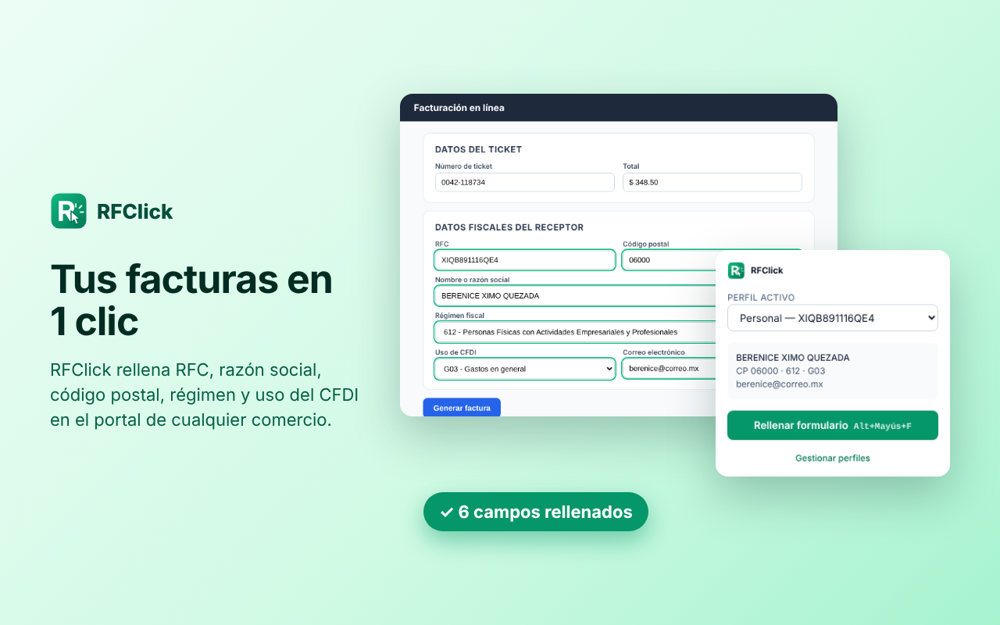

Tus facturas CFDI en 1 clic
RFClick rellena tu RFC, razón social, código postal, régimen y uso del CFDI en el portal de facturación de cualquier comercio, y revisa que estén bien escritos antes de que el SAT rechace tu factura.
Agregar a Chrome — gratis Muy pronto en la Chrome Web Store · También para Edge y Brave
Qué hace
Rellena en 1 clic
RFC, razón social, CP, régimen, uso del CFDI y correo, con un botón o con Alt+Shift+F.
Importa tu Constancia
Elige el PDF del SAT y tu perfil se crea solo. Se lee en tu navegador.
Evita rechazos
Valida tu RFC y que régimen y uso del CFDI sean compatibles, como exige CFDI 4.0.
Privado de verdad
Tus datos fiscales se quedan en tu navegador. Sin cuentas ni anuncios.
Cómo funciona
- Crea tu perfil fiscal o importa tu Constancia de Situación Fiscal.
- Entra al portal de facturación del comercio y escribe los datos de tu ticket.
- Pulsa RFClick: tus datos quedan listos para enviar.
Precios
Gratis
$01 perfil fiscal con todas las funciones.
Pro
US$7.99 pago únicoHasta 10 perfiles para ti, tu empresa o tu familia, en hasta 3 navegadores.
Despacho · próximamente
US$5.99 al mesPara contadores: perfiles ilimitados, búsqueda de clientes, importación masiva de Constancias e historial exportable, en hasta 10 navegadores.